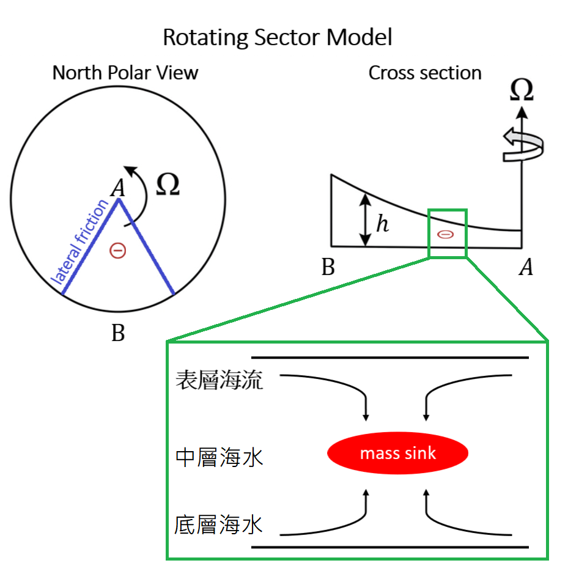
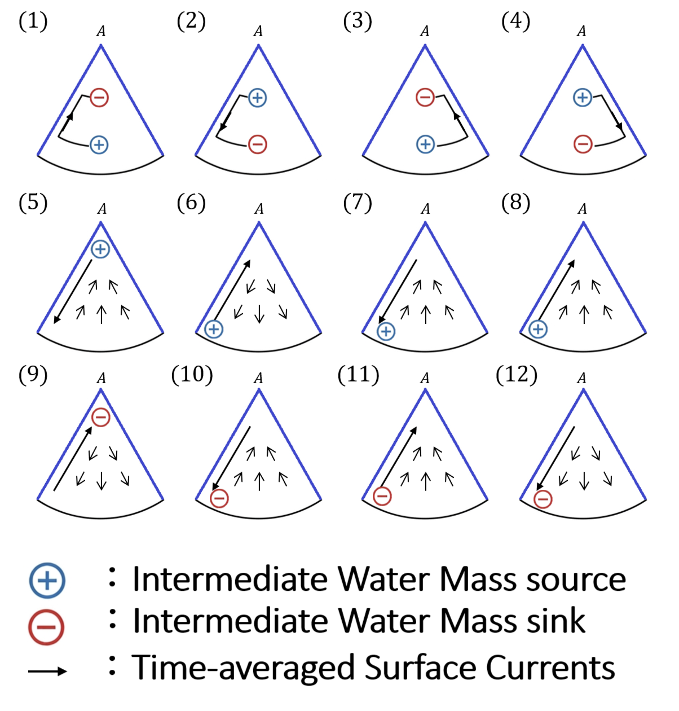

Advanced Atmospheric Dynamics Hw 3#
name:葉品辰
ID:r14229017
date: 2026.05.13
Question 大尺度長時間海洋環流的渦度平衡與質量守恆分析#
【背景敘述】#
在北太平洋上空的副熱帶高壓長年盤據，其反氣旋式的風場透過風應力（Wind stress）持續對海洋表面施加負的相對渦度（Negative Vorticity），然而長期的觀測顯示，北太平洋的海表面環流並未因此無止盡地加速旋轉，而是維持在一個動態平衡的狀態。
為了探討這個現象，我們建立一個理想化的 2D 旋轉海盆模型（可視為北半球太平洋的簡化）。在此模型中我們假設：
大洋內部低摩擦 (Low Friction in the Interior)：
由於大尺度海水的雷諾數 (\(Re\)) 極大，我們合理假設在遠離海岸的大洋內部，摩擦力對動能與渦度的消耗微乎其微。因此，內部流場的調整必須嚴格遵守位勢渦度守恆 (Potential Vorticity Conservation)。
恆定旋轉與 \(\beta\) 效應 (Constant Rotation with \(\beta\)-effect)：
系統處於恆定旋轉中（Constant rotation），如同真實地球，系統具有指向北方的正 \(\beta\) 效應（即科氏參數 \(f\) 隨緯度向北增加，或等效於旋轉水槽中水深向北逐漸變淺）。
質量守恆 (Mass Conservation)：
系統處於長時間的準平衡態。雖然真實海洋存在 3D 的溫鹽深層環流，但在此模型的 2D 投影平面上，水體的源、匯與流場輻合輻散必須達成整層質量守恆，水體不能無止盡地堆積在海盆的某一端。
側邊界摩擦力矩 (Frictional Torque at Lateral Boundaries)：
雖然大洋內部無摩擦，但海盆的固體側邊界存在不可忽略的摩擦力，能夠產生邊界力矩來抵銷風場輸入的渦度。

【符號與條件定義】#
本題的流場圖皆代表海洋表面的水塊運動：
細短箭頭：代表大洋內部水流緩慢、傳輸量小的內部流場 (Interior flow)。
粗長箭頭：代表貼近海岸、流速極快且傳輸量龐大的邊界流 (Boundary currents)。
藍色 \(\oplus\)：代表該水平位置的 海洋中層 有持續的質量源 (Mass Source)，可理解為冰川融化、大量降水或深層水湧升帶來的額外水體。
紅色 \(\ominus\)：代表該水平位置的 海洋中層 有持續的質量匯 (Mass Sink)，可理解為強烈蒸發或表面水下沉至深海。
【問題】#
假設整個海盆的內部區域都持續受到副熱帶高壓帶來的均勻負渦度擾動，海盆內存在如圖所示的局部質量源 \(\oplus\) 或匯 \(\ominus\)。請從下列 9 張候選圖形中（請參考附圖），挑選出完全符合上述物理推論與動態平衡的流場圖，並請依據「史維爾德魯普平衡 (Sverdrup Balance)」、「位勢渦度守恆」以及「邊界層理論」寫下你的推導過程與選擇理由。

Answer#
國中核分裂題目，質量數與原子序守恆定律#
擅長丟 戰略核武器 (Strategic Nuclear Weapon) 的同學都知道如何配平這個方程式求解出反應後的元素 \(_{A}^{Z}\text{X}\)、與質量數 \(A\) 與原子序 \(Z\)
稍微列等式並求解 \(A,Z\) ，然後查表看元素 \(X\)，就可以得到
大尺度長時間海洋環流，渦度平衡與質量守恆分析#
同樣道理，我們也可以關於列出這道題目的等式來協助我們推算哪個是合理的物理分布
假設與已知 (Assumptions & Preliminaries)#
【假設 1】 符號所代表的特性 ：
\[\begin{split}\begin{gather*} H &=& \begin{pmatrix} 0\\ -1\end{pmatrix} \\ \oplus &=& \begin{pmatrix} 0\\ -1\end{pmatrix} \\ \ominus &=& \begin{pmatrix} 0\\ +1\end{pmatrix} \\ \Uparrow &=& \begin{pmatrix} +1\\ -1\end{pmatrix} \\ \uparrow \uparrow \uparrow &=& \begin{pmatrix} +1\\ -1\end{pmatrix} \\ \Downarrow &=& \begin{pmatrix} -1\\ +1\end{pmatrix} \\ \downarrow \downarrow \downarrow &=& \begin{pmatrix} -1\\ +1\end{pmatrix} \\ \end{gather*}\end{split}\]\(H\) : 副熱帶高壓
\(\oplus\) : 代表該水平位置的 海洋中層 有持續的質量源 (Mass Source)
\(\ominus\) : 代表該水平位置的 海洋中層 有持續的質量匯 (Mass Sink)
\(\Uparrow\) : 貼近海岸、流速極快且傳輸量龐大的向北邊界流 (Boundary currents)
\(\uparrow \uparrow \uparrow\) : 代表大洋內部水流緩慢、傳輸量小的向北內部流場 (Interior flow)
\(\Downarrow\) : 貼近海岸、流速極快且傳輸量龐大的向赤道邊界流 (Boundary currents)
\(\downarrow \downarrow \downarrow\) : 代表大洋內部水流緩慢、傳輸量小的向赤道內部流場 (Interior flow)
矩陣代表的意思是 \(\begin{pmatrix} \text{向北的流}\\ \text{正的渦度}\end{pmatrix}\)
【已知 1】 依照渦度平衡與質量守恆的等式 ：
\[\begin{split}H + a \oplus + b \ominus + c \Uparrow + d \uparrow \uparrow \uparrow + e \Downarrow + f \downarrow \downarrow \downarrow = \begin{pmatrix} 0\\ 0\end{pmatrix} \end{split}\]\(H\) : 副熱帶高壓
\(a,b,c,d,e,f\) : 待定常數
\(\oplus\) : 代表該水平位置的 海洋中層 有持續的質量源 (Mass Source)
\(\ominus\) : 代表該水平位置的 海洋中層 有持續的質量匯 (Mass Sink)
\(\Uparrow\) : 貼近海岸、流速極快且傳輸量龐大的向北邊界流 (Boundary currents)
\(\uparrow \uparrow \uparrow\) : 代表大洋內部水流緩慢、傳輸量小的向北內部流場 (Interior flow)
\(\Downarrow\) : 貼近海岸、流速極快且傳輸量龐大的向赤道邊界流 (Boundary currents)
\(\downarrow \downarrow \downarrow\) : 代表大洋內部水流緩慢、傳輸量小的向赤道內部流場 (Interior flow)
矩陣代表的意思是 \(\begin{pmatrix} \text{向北的流}\\ \text{正的渦度}\end{pmatrix}\)
題目#
(1) \((a,b,c,d,e,f) = (1,1,1,0,0,0)\)
\[\begin{split}\begin{gather*} & H + a \oplus + b \ominus + c \Uparrow + d \uparrow \uparrow \uparrow + e \Downarrow + f \downarrow \downarrow \downarrow \\ \overset{\text{(1)}}{=}&H + 1 \oplus + 1 \ominus + 1 \Uparrow + 0 \uparrow \uparrow \uparrow + 0 \Downarrow + 0 \downarrow \downarrow \downarrow \\ \overset{\text{假設 1}}{=}&\begin{pmatrix} 0\\ -1\end{pmatrix} + \begin{pmatrix} 0\\ -1\end{pmatrix} + \begin{pmatrix} 0\\ +1\end{pmatrix} + \begin{pmatrix} +1\\ -1\end{pmatrix} \\ =& \begin{pmatrix} 1\\ -2\end{pmatrix} &\ne& \begin{pmatrix} 0\\ 0\end{pmatrix} \\ \overset{\text{已知 1}}{\Rightarrow} & \text{不符合物理} \end{gather*}\end{split}\]不符合質量守恆
不符合位渦守恆
(2) \((a,b,c,d,e,f) = (1,1,0,0,1,0)\)
\[\begin{split}\begin{gather*} & H + a \oplus + b \ominus + c \Uparrow + d \uparrow \uparrow \uparrow + e \Downarrow + f \downarrow \downarrow \downarrow \\ \overset{\text{(2)}}{=}&H + 1 \oplus + 1 \ominus + 0 \Uparrow + 0 \uparrow \uparrow \uparrow + 1 \Downarrow + 0 \downarrow \downarrow \downarrow \\ \overset{\text{假設 1}}{=}&\begin{pmatrix} 0\\ -1\end{pmatrix} + \begin{pmatrix} 0\\ -1\end{pmatrix} + \begin{pmatrix} 0\\ +1\end{pmatrix} + \begin{pmatrix} -1\\ +1\end{pmatrix} \\ =& \begin{pmatrix} 1\\ 0\end{pmatrix} &\ne& \begin{pmatrix} 0\\ 0\end{pmatrix} \\ \overset{\text{已知 1}}{\Rightarrow} & \text{不符合物理} \end{gather*}\end{split}\]不符合質量守恆
(3) \((a,b,c,d,e,f) = (1,1,1,0,0,0)\)
\[\begin{split}\begin{gather*} & H + a \oplus + b \ominus + c \Uparrow + d \uparrow \uparrow \uparrow + e \Downarrow + f \downarrow \downarrow \downarrow \\ \overset{\text{(3)}}{=}&H + 1 \oplus + 1 \ominus + 1 \Uparrow + 0 \uparrow \uparrow \uparrow + 0 \Downarrow + 0 \downarrow \downarrow \downarrow \\ \overset{\text{假設 1}}{=}&\begin{pmatrix} 0\\ -1\end{pmatrix} + \begin{pmatrix} 0\\ -1\end{pmatrix} + \begin{pmatrix} 0\\ +1\end{pmatrix} + \begin{pmatrix} +1\\ -1\end{pmatrix} \\ =& \begin{pmatrix} 1\\ -2\end{pmatrix} &\ne& \begin{pmatrix} 0\\ 0\end{pmatrix} \\ \overset{\text{已知 1}}{\Rightarrow} & \text{不符合物理} \end{gather*}\end{split}\]不符合質量守恆
不符合位渦守恆
(4) \((a,b,c,d,e,f) = (1,1,0,0,1,0)\)
\[\begin{split}\begin{gather*} & H + a \oplus + b \ominus + c \Uparrow + d \uparrow \uparrow \uparrow + e \Downarrow + f \downarrow \downarrow \downarrow \\ \overset{\text{(4)}}{=}&H + 1 \oplus + 1 \ominus + 0 \Uparrow + 0 \uparrow \uparrow \uparrow + 1 \Downarrow + 0 \downarrow \downarrow \downarrow \\ \overset{\text{假設 1}}{=}&\begin{pmatrix} 0\\ -1\end{pmatrix} + \begin{pmatrix} 0\\ -1\end{pmatrix} + \begin{pmatrix} 0\\ +1\end{pmatrix} + \begin{pmatrix} -1\\ +1\end{pmatrix} \\ =& \begin{pmatrix} 1\\ 0\end{pmatrix} &\ne& \begin{pmatrix} 0\\ 0\end{pmatrix} \\ \overset{\text{已知 1}}{\Rightarrow} & \text{不符合物理} \end{gather*}\end{split}\]不符合質量守恆
(5) \((a,b,c,d,e,f) = (1,0,0,1,1,0)\)
\[\begin{split}\begin{gather*} & H + a \oplus + b \ominus + c \Uparrow + d \uparrow \uparrow \uparrow + e \Downarrow + f \downarrow \downarrow \downarrow \\ \overset{\text{(5)}}{=}&H + 1 \oplus + 0 \ominus + 0 \Uparrow + 1 \uparrow \uparrow \uparrow + 1 \Downarrow + 0 \downarrow \downarrow \downarrow \\ \overset{\text{假設 1}}{=}& \begin{pmatrix} 0\\ -1\end{pmatrix} + \begin{pmatrix} 0\\ -1\end{pmatrix} + \begin{pmatrix} +1\\ -1\end{pmatrix} + \begin{pmatrix} -1\\ +1\end{pmatrix} \\ =& \begin{pmatrix} 0\\ -2\end{pmatrix} &\ne& \begin{pmatrix} 0\\ 0\end{pmatrix} \\ \overset{\text{已知 1}}{\Rightarrow} & \text{不符合物理} \end{gather*}\end{split}\]不符合位渦守恆
(6) \((a,b,c,d,e,f) = (1,0,1,0,0,1)\)
\[\begin{split}\begin{gather*} & H + a \oplus + b \ominus + c \Uparrow + d \uparrow \uparrow \uparrow + e \Downarrow + f \downarrow \downarrow \downarrow \\ \overset{\text{(6)}}{=}&H + 1 \oplus + 0 \ominus + 1 \Uparrow + 0 \uparrow \uparrow \uparrow + 0 \Downarrow + 1 \downarrow \downarrow \downarrow \\ \overset{\text{假設 1}}{=}& \begin{pmatrix} 0\\ -1\end{pmatrix} + \begin{pmatrix} 0\\ -1\end{pmatrix} + \begin{pmatrix} +1\\ -1\end{pmatrix} + \begin{pmatrix} -1\\ +1\end{pmatrix} \\ =& \begin{pmatrix} 0\\ -2\end{pmatrix} &\ne& \begin{pmatrix} 0\\ 0\end{pmatrix} \\ \overset{\text{已知 1}}{\Rightarrow} & \text{不符合物理} \end{gather*}\end{split}\]不符合位渦守恆
(7) \((a,b,c,d,e,f) = (1,0,0,1,1,0)\)
\[\begin{split}\begin{gather*} & H + a \oplus + b \ominus + c \Uparrow + d \uparrow \uparrow \uparrow + e \Downarrow + f \downarrow \downarrow \downarrow \\ \overset{\text{(7)}}{=}&H + 1 \oplus + 0 \ominus + 0 \Uparrow + 1 \uparrow \uparrow \uparrow + 1 \Downarrow + 0 \downarrow \downarrow \downarrow \\ \overset{\text{假設 1}}{=}& \begin{pmatrix} 0\\ -1\end{pmatrix} + \begin{pmatrix} 0\\ -1\end{pmatrix} + \begin{pmatrix} +1\\ -1\end{pmatrix} + \begin{pmatrix} -1\\ +1\end{pmatrix} \\ =& \begin{pmatrix} 0\\ -2\end{pmatrix} &\ne& \begin{pmatrix} 0\\ 0\end{pmatrix} \\ \overset{\text{已知 1}}{\Rightarrow} & \text{不符合物理} \end{gather*}\end{split}\]不符合位渦守恆
(8) \((a,b,c,d,e,f) = (1,0,1,1,0,0)\)
\[\begin{split}\begin{gather*} & H + a \oplus + b \ominus + c \Uparrow + d \uparrow \uparrow \uparrow + e \Downarrow + f \downarrow \downarrow \downarrow \\ \overset{\text{(8)}}{=}&H + 1 \oplus + 0 \ominus + 1 \Uparrow + 1 \uparrow \uparrow \uparrow + 0 \Downarrow + 0 \downarrow \downarrow \downarrow \\ \overset{\text{假設 1}}{=}& \begin{pmatrix} 0\\ -1\end{pmatrix} + \begin{pmatrix} 0\\ -1\end{pmatrix} + \begin{pmatrix} +1\\ -1\end{pmatrix} + \begin{pmatrix} +1\\ -1\end{pmatrix} \\ =& \begin{pmatrix} 2\\ -4\end{pmatrix} &\ne& \begin{pmatrix} 0\\ 0\end{pmatrix} \\ \overset{\text{已知 1}}{\Rightarrow} & \text{不符合物理} \end{gather*}\end{split}\]不符合質量守恆
不符合位渦守恆
(9) \((a,b,c,d,e,f) = (0,1,1,0,0,1)\)
\[\begin{split}\begin{gather*} & H + a \oplus + b \ominus + c \Uparrow + d \uparrow \uparrow \uparrow + e \Downarrow + f \downarrow \downarrow \downarrow \\ \overset{\text{(9)}}{=}&H + 0 \oplus + 1 \ominus + 1 \Uparrow + 0 \uparrow \uparrow \uparrow + 0 \Downarrow + 1 \downarrow \downarrow \downarrow \\ \overset{\text{假設 1}}{=}& \begin{pmatrix} 0\\ -1\end{pmatrix} + \begin{pmatrix} 0\\ +1\end{pmatrix} + \begin{pmatrix} +1\\ -1\end{pmatrix} + \begin{pmatrix} -1\\ +1\end{pmatrix} \\ =& \begin{pmatrix} 0\\ 0\end{pmatrix} &=& \begin{pmatrix} 0\\ 0\end{pmatrix} \\ \overset{\text{已知 1}}{\Rightarrow} & \text{符合物理} \end{gather*}\end{split}\]符合質量守恆
符合位渦守恆
(10) \((a,b,c,d,e,f) = (0,1,0,1,1,0)\)
\[\begin{split}\begin{gather*} & H + a \oplus + b \ominus + c \Uparrow + d \uparrow \uparrow \uparrow + e \Downarrow + f \downarrow \downarrow \downarrow \\ \overset{\text{(10)}}{=}&H + 0 \oplus + 1 \ominus + 0 \Uparrow + 1 \uparrow \uparrow \uparrow + 1 \Downarrow + 0 \downarrow \downarrow \downarrow \\ \overset{\text{假設 1}}{=}& \begin{pmatrix} 0\\ -1\end{pmatrix} + \begin{pmatrix} 0\\ +1\end{pmatrix} + \begin{pmatrix} +1\\ -1\end{pmatrix} + \begin{pmatrix} -1\\ +1\end{pmatrix} \\ =& \begin{pmatrix} 0\\ 0\end{pmatrix} &=& \begin{pmatrix} 0\\ 0\end{pmatrix} \\ \overset{\text{已知 1}}{\Rightarrow} & \text{符合物理} \end{gather*}\end{split}\]符合質量守恆
符合位渦守恆
(11) \((a,b,c,d,e,f) = (0,1,1,0,0,1)\)
\[\begin{split}\begin{gather*} & H + a \oplus + b \ominus + c \Uparrow + d \uparrow \uparrow \uparrow + e \Downarrow + f \downarrow \downarrow \downarrow \\ \overset{\text{(11)}}{=}&H + 0 \oplus + 1 \ominus + 1 \Uparrow + 0 \uparrow \uparrow \uparrow + 0 \Downarrow + 1 \downarrow \downarrow \downarrow \\ \overset{\text{假設 1}}{=}& \begin{pmatrix} 0\\ -1\end{pmatrix} + \begin{pmatrix} 0\\ +1\end{pmatrix} + \begin{pmatrix} +1\\ -1\end{pmatrix} + \begin{pmatrix} -1\\ +1\end{pmatrix} \\ =& \begin{pmatrix} 0\\ 0\end{pmatrix} &=& \begin{pmatrix} 0\\ 0\end{pmatrix} \\ \overset{\text{已知 1}}{\Rightarrow} & \text{符合物理} \end{gather*}\end{split}\]符合質量守恆
符合位渦守恆
(12) \((a,b,c,d,e,f) = (0,1,0,0,1,1)\)
\[\begin{split}\begin{gather*} & H + a \oplus + b \ominus + c \Uparrow + d \uparrow \uparrow \uparrow + e \Downarrow + f \downarrow \downarrow \downarrow \\ \overset{\text{(11)}}{=}&H + 0 \oplus + 1 \ominus + 0 \Uparrow + 0 \uparrow \uparrow \uparrow + 1 \Downarrow + 1 \downarrow \downarrow \downarrow \\ \overset{\text{假設 1}}{=}& \begin{pmatrix} 0\\ -1\end{pmatrix} + \begin{pmatrix} 0\\ +1\end{pmatrix} + \begin{pmatrix} -1\\ +1\end{pmatrix} + \begin{pmatrix} -1\\ +1\end{pmatrix} \\ =& \begin{pmatrix} -2\\ 2\end{pmatrix} &\ne& \begin{pmatrix} 0\\ 0\end{pmatrix} \\ \overset{\text{已知 1}}{\Rightarrow} & \text{不符合物理} \end{gather*}\end{split}\]不符合質量守恆
不符合位渦守恆
結論#
符合物理 : (9)、(10)、(11)
不符合物理 :
不符合質量守恆 : (1)、(2)、(3)、(4)、(8)、(12)
不符合位渦守恆 : (1)、(3)、(5)、(6)、(7)、(8)、(12)
但是郭老師說(2)、(4)、(5)、(7)、(9)、(11)符合物理，那麼我們之中必有人錯。